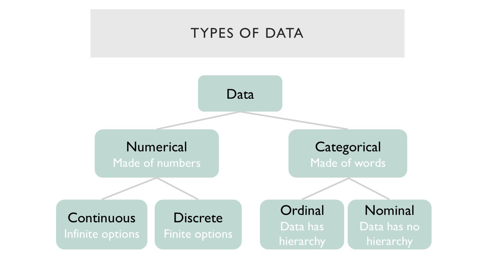
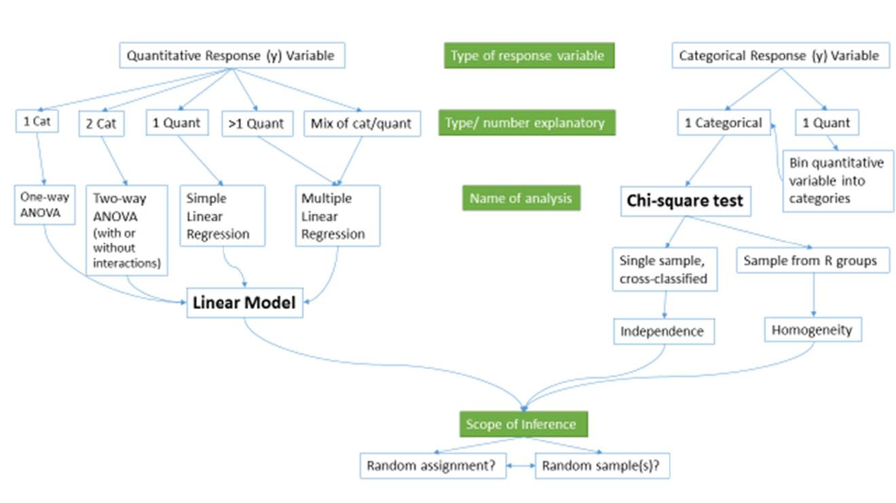

A Mini Handbook of Statistical Analyses
2019-04-04
Prepare
Definitions
Population: the collection of all individuals or items under consideration in a statistical study. (Weiss, 1999)
Sample: the part of the population from which information is collected. (Weiss, 1999)
Parameter: A descriptive measure for a population, ex. \(\mu, \sigma\)
Statistic: A descriptive measure for a sample, ex. \(\bar{x}, s\)
